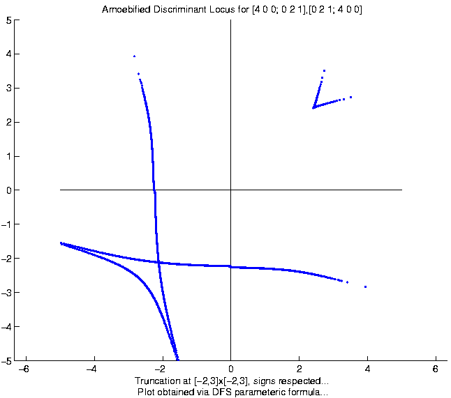
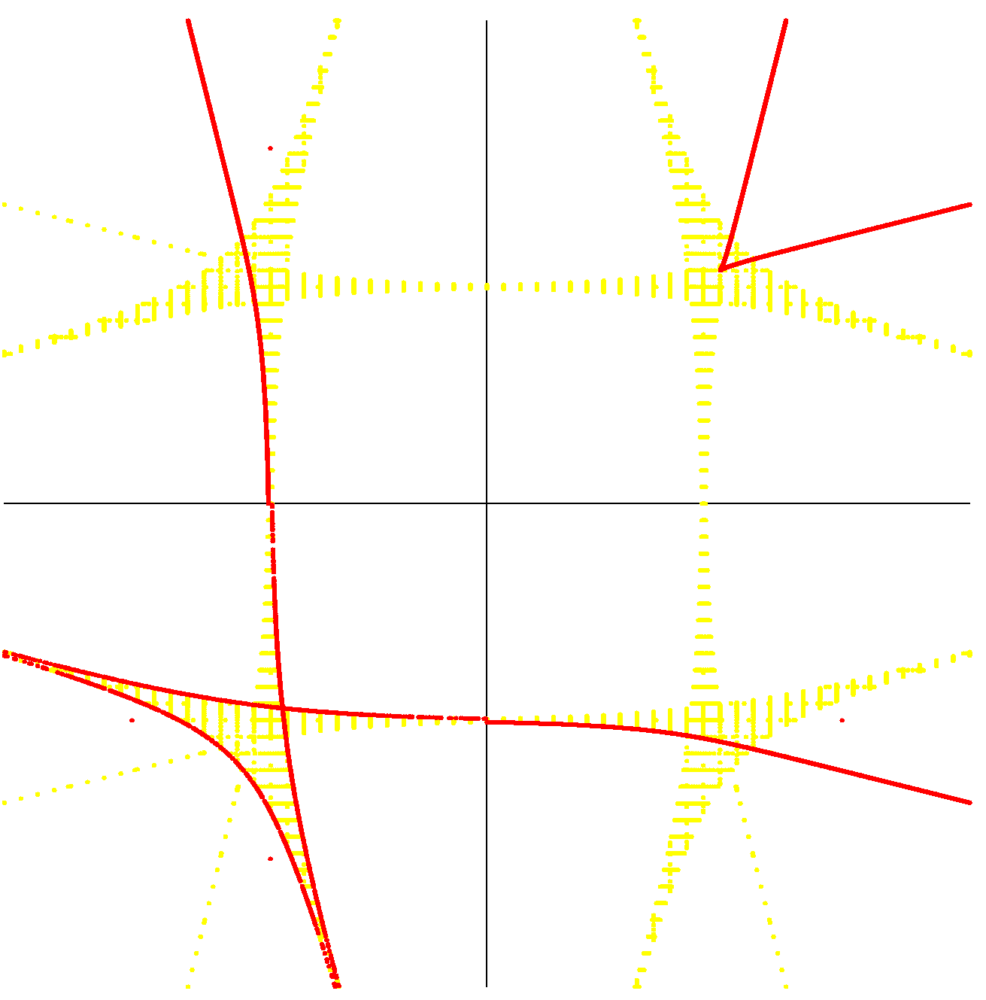
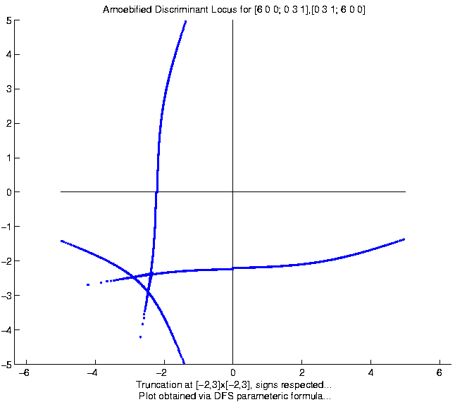
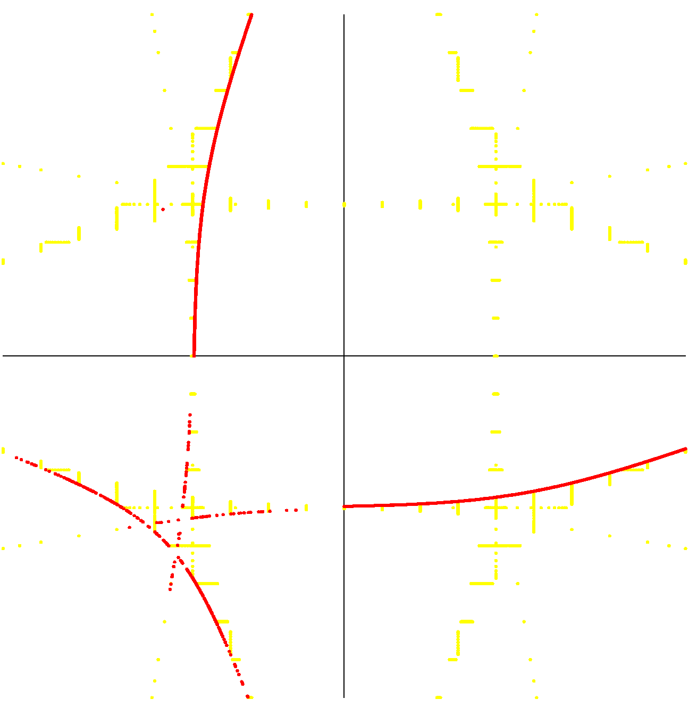
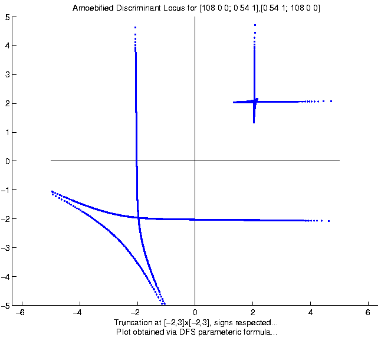
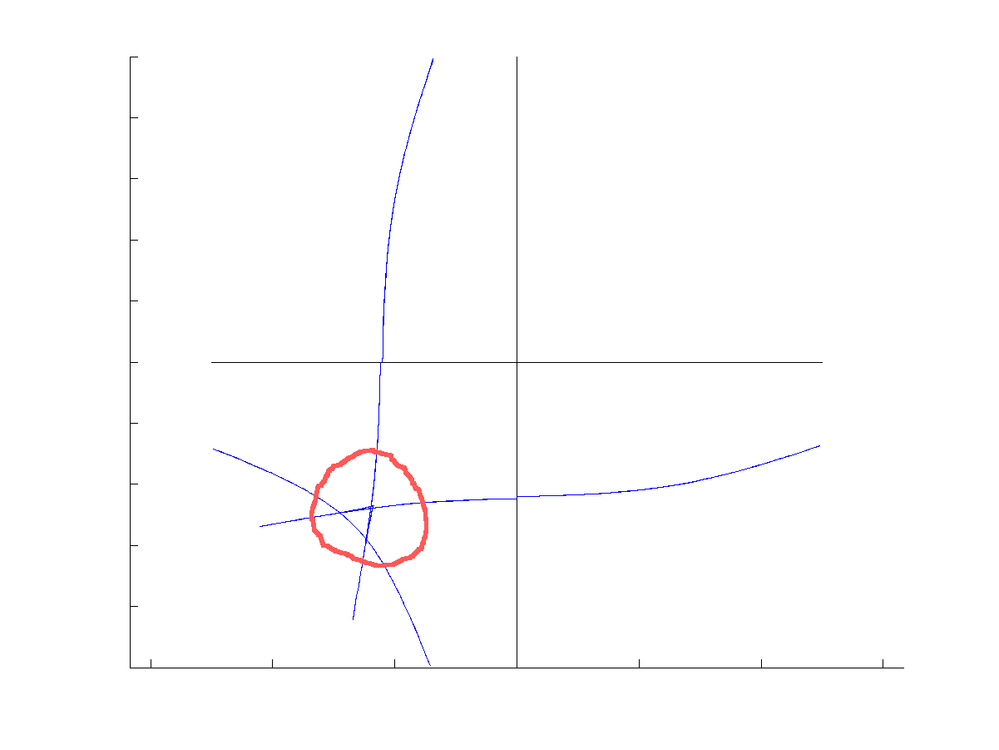
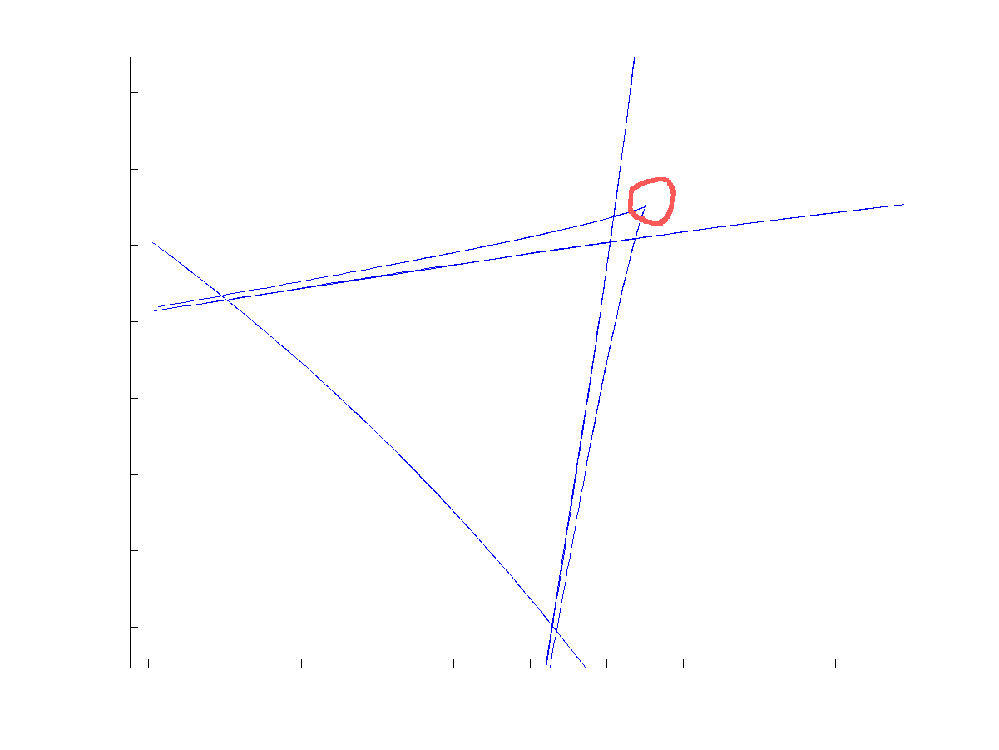
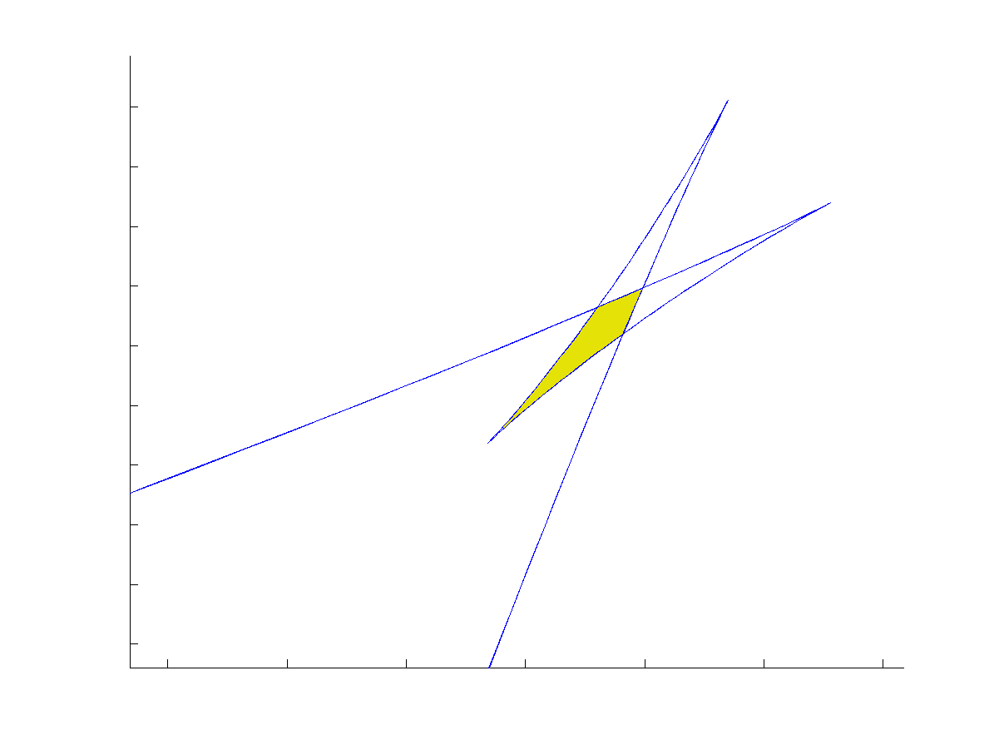

Fewnomial Theory is a beautiful invention of Askold Khovanski and Konstantin Sevastyanov (after 1979) that greatly extends the classical Descartes' Rule of Signs (from 1637). In particular, Khovanski's theory shows that systems of real polynomial equations with a fixed number of monomial terms have an absolute bound --- completely independent of the degrees of the underlying polynomials --- on the number of real isolated roots they can have.
More recently, an arithmetic analogue was found by Rojas (following earlier seminal work of Denef, van den Dries, Lipshitz, and Lenstra), and quantitative improvements to real fewnomial theory continue to blossom. We illustrate one such example below.
Consider a 2x2 system of the form (x^{2d}+ay^d-y,y^{2d}+bx^d-x). What is the maximum (finite) number of roots such a system of equations can have in the positive quadrant? This question is intimately related to the failure of Kushnirenko's Conjecture from real algebraic geometry (real fewnomial theory, to be precise).
In particular, a conjectured bound of Kushnirenko puts this maximum (for any (a,b,d)) at 4. Kushnirenko has stated that he knew his conjecture was wrong shortly after he formulated it, and a simple counter-example was found by a colleague of his in Moscow. However, no one appears to have recorded this counter-example nor the identity of its author.
Bertrand Haas, in 2000, found a simple counter-example with d=54 and (in our notation), a and b easily expressible algebraic numbers. In particular, Haas' counter-example showed that such systems could possess as many as 5 roots in the positive quadrant. Li, Rojas, and Wang then showed around 2001 that 5 is the maximum number.
More recently, in joint work of Dickenstein, Rojas, Rusek, and Shih (around July 2005), an even simpler counter-example was found: (a,b,d)=(44/31,44/31,3). (It is interesting to note that Haas found his counter-example by fixing some simple coefficients and then varying exponents by a clever ad hoc argument. Our counter-example was found by fixing the exponents and then varying the coefficients.) However, a deeper question is why such counter-examples are so hard to find.
This is partially answered by exploring the shape of discriminant complements over the real numbers. Fortunately for us, the discriminant corresponding to d=3 can be computed relatively easily via Maple. However, the discriminant for the family of systems containing Haas' counter-example was out of reach until recently: Thanks to a recent formula of Dickenstein, Feichtner, and Sturmfels, we can plot discriminants corresponding to high d with great ease.
Below are some pictures of the amoebae of the underlying discriminants. The blue curves were plotted with the DFS formula while the yellow/red plots were obtained by a direct calculation of the underlying (large) discriminant polynomial. Note that the plots are reflected in such a way that the signs of the real points of the discriminants are respected, and that the plots also have some ``clipping'' near the coordinate cross.
The corresponding paper will be ready shortly... JMR, 7/26/2005.





All the pictures above were drawn via Matlab and should all be taken with a grain of salt. Floating point error makes some of the plots dubious at high resolution but symbolic checks (with the assistance of Sturm sequences and Maple) help circumvent such difficulties. A more subtle issue is the existence of isolated components for the real discriminant locus but we will discuss this later.
In the mean time, it is interesting to note the richness of detail in our discriminant plots: For instance, the d=3 plots above appear to imply 7 discriminant chambers in the third quadrant. However, there are in fact over 19, as revealed in the magnified plots below.


